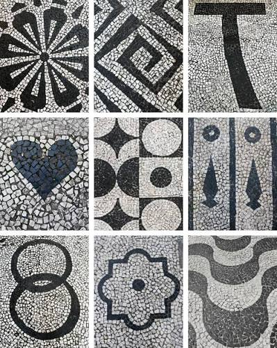
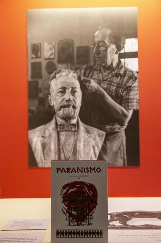
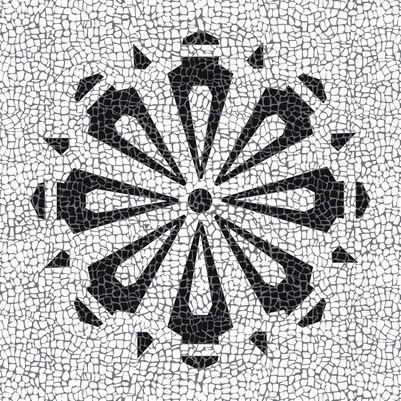

O Pinhão Geométrico: Como a Natureza Virou Mosaico Urbanístico
Na década de 1920, o artista Lange de Morretes teve uma ideia brilhante: usar o formato do pinhão e das agulhas da araucária para criar um padrão geométrico único. O desenho, composto pela repetição simétrica das pedras pretas e brancas de basalto e calcário, transformou o chão da cidade em uma verdadeira tela. O que antes era apenas uma técnica de pavimentação herdada dos portugueses ganhou uma identidade 100% paranaense, mostrando que os símbolos da nossa natureza poderiam fazer parte da arquitetura e do dia a dia de quem anda pela rua.

As Origens: Da Tradição Portuguesa ao Símbolo Paranaense
Para entender essa arte, é preciso voltar ao início do século XX. A técnica do petit-pavé veio de Portugal, trazida por mestres calceteiros que moldavam à mão pedras de calcário branco e basalto negro. No entanto, no Paraná, a prática ganhou um propósito totalmente novo durante as décadas de 1920 e 1930 com o Movimento Paranista. Intelectuais e artistas locais queriam libertar a cultura da região das influências europeias e criar uma arte com a cara do estado. A calçada, então, deixou de ser uma simples cópia da tradição portuguesa e passou a carregar a história, os símbolos e a identidade da população paranaense.

Mais que Pedras: Um Patrimônio Vivo da Identidade Paranaense
A verdadeira importância cultural do petit-pavé está na sua capacidade de transformar o cotidiano em arte acessível a todos. Mais do que um elemento estético ou arquitetônico, essas calçadas funcionam como uma galeria a céu aberto que preserva a memória do estado e fortalece o sentimento de pertencer à cidade. Ao caminhar sobre os desenhos de pinhões, rosetas e grafismos no centro histórico ou no calçadão da Rua das Flores, o pedestre estabelece uma relação afetiva imediata com o espaço urbano. O mosaico paranaense transforma a rua em patrimônio cultural vivo, tornando a história do Paraná parte inseparável da rotina de quem vive ou visita o estado.

Curiosidades
Curiosiade 1
O desenho das ondas pretas e brancas na Avenida Atlântica foi trazido de Portugal em 1906 (baseado no piso da Praça do Rossio, em Lisboa). Na década de 1970, Roberto Burle Marx modernizou o projeto e estendeu o traçado ao longo de toda a praia.
Curiosiade 2
Em Portugal, usa-se predominantemente o calcário. No Brasil, além do calcário branco, utilizou-se muito o basalto negro e o quartzo, pedras abundantes na região sul e sudeste do país.